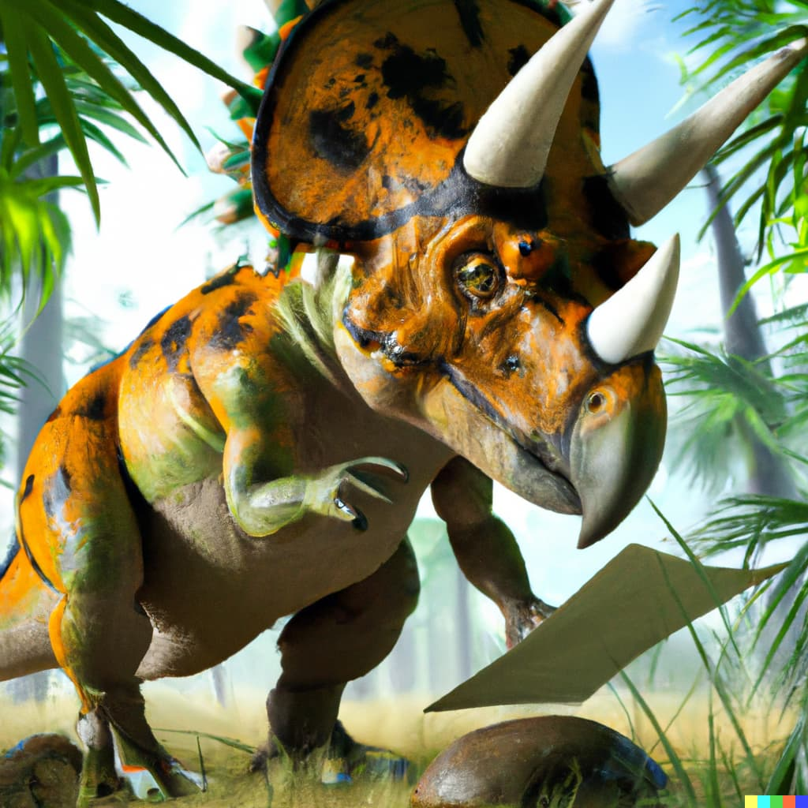

Triceratops

Ingredients
- Amber with mosquito inside.
- tiny drill.
- 1ml syringe.
- DNA analyser.
- Frog DNA.
- Cryochamber.
- Hatching facility.
Steps
- Use the tiny drill to make a channel into the amber.
- Carefully use the syringe to extract the contents of
the mosquito's stomach.
- Analyse the DNA in the syringe to confirm it's
the blood of a Triceratops.
- Extract the Triceratops DNA.
- Combine the frog DNA with the Triceratops DNA.
- Use the Cryochamber to incubate the Triceratops embryo.
- Transfer the Triceratops embryo to the hatching facility and
wait for the Triceratops to hatch.
- Once hatched, establish a psychic connection with the Triceratops.